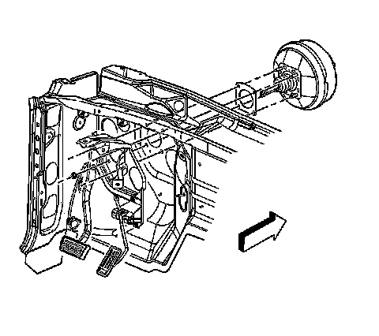

Vacuum Brake Booster: Service and Repair
Vacuum Brake Booster Replacement
Removal Procedure
Caution: Refer to Brake Fluid Irritant Caution.
Notice: Refer to Brake Fluid Effects on Paint and Electrical Components Notice.
1. Apply the park brake.
2. Deplete the vacuum reserve in the vacuum booster by applying the brake pedal 3 times or until the pedal becomes firm.
3. Remove the electrical connectors for the DOD sensor (1) and the active booster connector (2).
4. Remove the vacuum hose from the check valve (3).
5. Remove the 2 master cylinder nuts.
Important:
^ It is not necessary to disconnect the brake pipes from the master cylinder.
^ Ensure the O-ring vacuum seal is on the master cylinder after removal.
Position the master cylinder aside and secure with heavy mechanics wire or equivalent.

6. Remove the retaining clip (4) for the pushrod (1).
7. Remove the stop lamp switch (2) and the pushrod (3) from the brake pedal (1).

8. Remove the brake booster mounting nuts.
9. Remove the brake booster.
10. Remove and discard the brake booster gasket.
Installation Procedure
1. Install the NEW brake booster gasket.
Important: An assistant may be necessary to hold the brake booster in place while installing the nuts.
2. Install the brake booster to the vehicle.
Notice: Refer to Fastener Notice.
Important: Tighten the upper right brake booster nut first.
3. Install the brake booster nuts.
Tighten the nuts to 33 N.m (24 lb ft).
4. Install the pushrod (3) and stop lamp switch (2) to the brake pedal (1).
5. Install the pushrod retaining clip (4) to the brake pedal (1).
6. Install the vacuum hose to the check valve (3).
7. Install the electrical connectors to the DOD sensor (1) and the active booster connector (2).
8. Install the master cylinder.
9. Install the 2 master cylinder nuts.
Tighten the nuts to 33 N.m (24 lb ft).